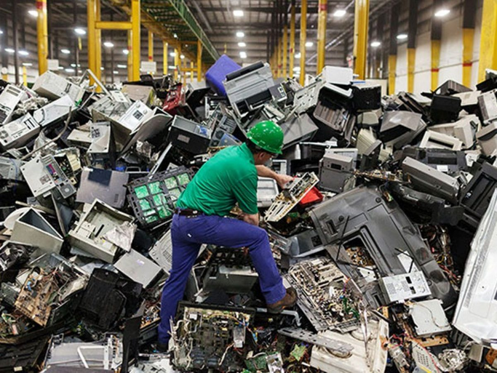

Lixo Eletrônico: O que caracteriza esse tipo de resíduo?
O lixo eletrônicoNum mundo cada vez mais conectado, o avanço da tecnologia trouxe inúmeras comodidades à nossa vida cotidiana. No entanto, junto com os benefícios, também surgiu um desafio crescente: o lixo eletrônico. Desde smartphones e laptops até aparelhos domésticos e equipamentos industriais, a rápida obsolescência e a constante busca por novos dispositivos levam a um aumento significativo na quantidade de resíduos eletrônicos gerados a cada ano.
O lixo eletrônico, ou e-lixo, é composto por uma variedade de componentes tóxicos e materiais valiosos, como metais pesados, plásticos, vidro e circuitos eletrônicos. Quando descartados de forma inadequada, esses resíduos podem representar sérios riscos para o meio ambiente e para a saúde humana. A queima de e-lixo libera substâncias químicas perigosas na atmosfera, enquanto o descarte em aterros sanitários pode contaminar o solo e as águas subterrâneas.
Qual a importância de descartar o lixo verde de maneira correta?
Diante desse cenário, é crucial promover práticas de descarte responsável de lixo eletrônico.Isso inclui a redução do consumo excessivo, a reutilização de dispositivos sempre que possível e o correto encaminhamento para reciclagem.Muitos materiais presentes nos eletrônicos podem ser reciclados e recuperados, reduzindo assim a necessidade de extração de recursos naturais e minimizando o impacto ambiental. O lixo eletrônico é um dos fluxos de resíduos de crescimento mais rápido no mundo. Cerca de 53,6 milhões de toneladas métricas de lixo eletrônico foram geradas globalmente em 2019.
Além disso, é fundamental conscientizar a população sobre os perigos do descarte inadequado de e-lixo e incentivar a participação em programas de coleta seletiva e pontos de reciclagem. Governos, empresas e a sociedade civil devem trabalhar juntos para desenvolver políticas e infraestruturas adequadas para lidar com o crescente volume de resíduos eletrônicos de forma segura e sustentável. Somente através de um esforço conjunto e um compromisso com a responsabilidade ambiental podemos enfrentar o desafio do lixo eletrônico e garantir um futuro mais limpo e saudável para as gerações futuras.
